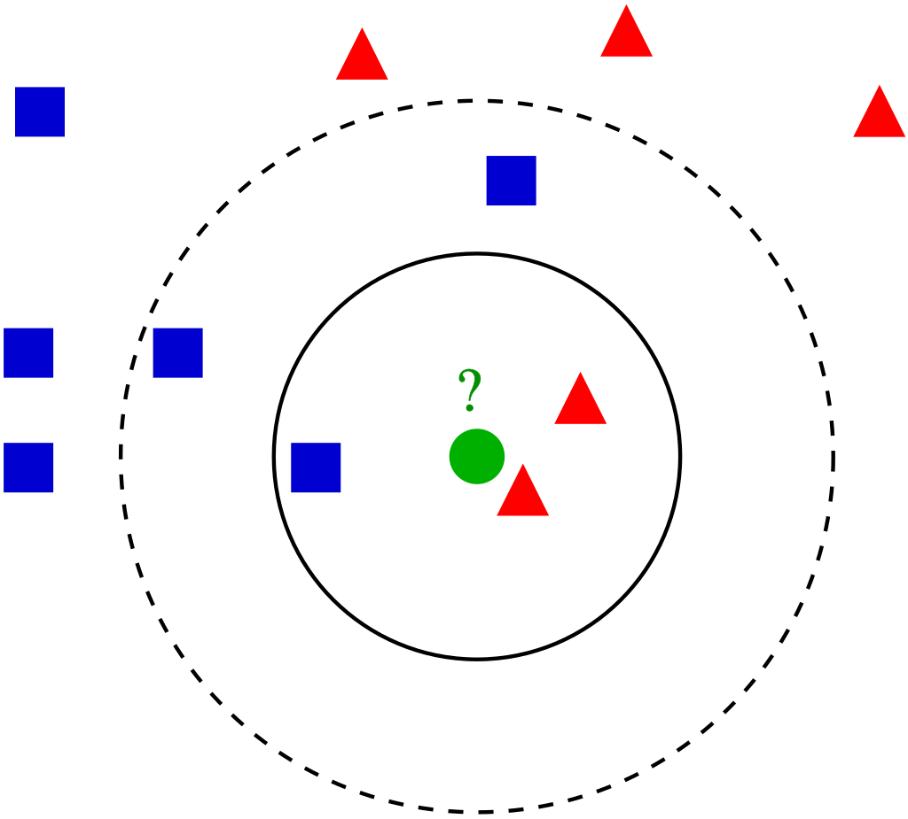

Projet réalisé avec :
- Grataloup Tanguy
Durant le premier semestre de ma première année j’ai pu réaliser un classificateur de dépêche journalistique en Java en groupe de 2. Notre but était de partir de fichiers TXT contenant des dépêches pour trouver des moyens de les classer en 5 catégories : sciences, politique, sport, économie et culture. Nous avons ainsi réalisé 3 algorithmes.
C’était le plus simple à faire : premièrement nous avons récupéré quelques mots apparaissant surtout dans telle ou telle catégorie. Ainsi, quand ces mots apparaissent dans la dépêche que l’algorithme doit trier, il donne des points à la catégorie correspondante. Enfin l’algorithme sélectionne la catégorie qui a le plus de points et catégorise la dépêche, puis passe à la suivante. Cette technique est assez rapide mais peu fiable, seulement 60% des dépêches étaient correctement triées, car les lexiques sont trop limités.
Ensuite, nous avons grandement amélioré le premier algorithme en faisant en sorte que le lexique soit créé par l’algorithme en lui-même. L’algorithme stocke tous les mots de toutes les dépêches dans tous les lexiques (en enlevant les mots outils comme le, la, un, comme etc.), attribuer des points pour chaque fois qu'un mot apparaît dans une dépêche de la catégorie du lexique mais en enlève un pour toutes les fois où il apparaît dans une dépêche d’une autre catégorie. Puis l’algorithme fonctionne de la même manière que le précédent.
Cette méthode est très fiable (95,6% des dépêches sont correctement classées), mais lente à cause de la taille des lexiques. Nous avons donc amélioré ce processus en triant les lexiques via un tri à fusion (le plus rapide que nous sachions programmer) afin d’utiliser des recherches plus rapides que les séquentielles, comme la dichotomie.
Ce type d’algorithme est assez simple à faire mais complexe à expliquer. L’algorithme se base sur cette affirmation : “Si 5 de mes 6 voisins sont bleus, je suis statistiquement bleu.” Ainsi, KNN se base sur ses voisins donc nous devons définir ce qu’est un voisin en définissant ce qu’est la distance dans notre algorithme.
Prenons un exemple :

Ici, si la distance est de 1 (le cercle plein), alors les voisins les plus proches sont ceux dans ce cercle : 2 triangles et 1 carré. Ainsi, le disque au centre est un triangle selon KNN. Mais si la distance est de 2 (le cercle en pointillé), alors il y a 3 carrés pour 2 triangles, ainsi le disque est un carré.
La distance est donc une valeur très importante. Des chercheurs ont passé des années à chercher les meilleures distances, mais nos professeurs nous ont demandé de calculer la distance via le nombre de mots communs.
Ainsi l’algorithme compare les mots de la dépêche à classer avec tous les mots (sauf les mots outils) des dépêches de sa base de données. Il attribut ainsi un score à chaque catégorie. Ensuite, il sélectionne les 5 dépêches de la base de données avec les plus grands scores de mots communs et choisit la catégorie qui apparaît le plus parmi elles. Cet algorithme peut être très puissant, mais notre manière de calculer le rend très faible. Il a un taux de réussite (65%) équivalent au lexique manuel et est le plus lent. Pour l'améliorer, il faudrait utiliser de vraies formules de calcul de distances.
Durant ce projet j’ai programmé l’algorithme KNN, une bonne partie de l’algorithme par lexique trié et son amélioration par le tri.